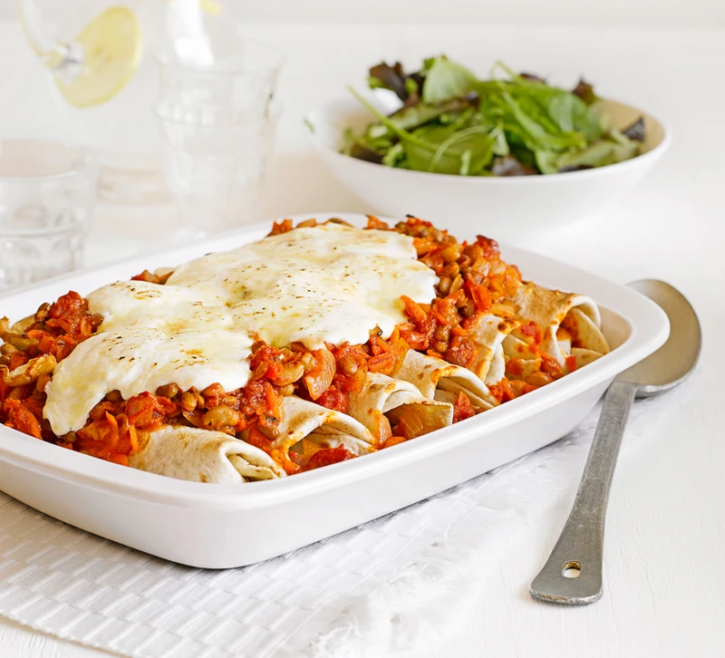

Enchiladas
Home

Description
Mildly spicy and satisfying, these easy enchiladas stuffed with
refried beans, onion and red pepper will be popular with the whole
family.
Ingredients
- 3 tbsp olive oil
- 2 red onions, sliced
- 2 red peppers, sliced
- 3 red chillies, 2 deseeded and chopped, 1 sliced
-
Small bunch coriander, stalks finely chopped, leaves roughly
chopped
- 2 garlic cloves, crushed
- 1 tbsp ground coriander
- 1 tbsp cumin seeds
- 6 skinless chicken breasts, cut into small chunks
- 415g can refried beans
- 198g can sweetcorn, drained
- 700ml bottle passata
- 1tsp golden caster sugar
- 10 tortillas
- 2 x 142ml pots soured cream
- 200g cheddar, grated
Steps
-
Heat 2 tbsp of the oil in your largest pan, then fry the onions,
peppers, chopped chilli and coriander stalks with half the
garlic for 10 mins until soft. Stir in 2 tsp ground coriander
and 2 tsp cumin seeds, then fry for 1 min more. Meanwhile, in
another frying pan, fry the chicken in the remaining oil, in
batches, until browned - add it to the pan of veg as it is done.
-
Stir the beans, sweetcorn, coriander leaves and 150ml of the
passata into the veg and chicken. In a bowl, mix the rest of the
passata with the other crushed garlic clove, the remaining
spices and the sugar, then set aside.
-
To assemble, lay the tortillas onto a board and divide the
chicken mixture between them, folding over the ends and rolling
up to seal. Divide the passata sauce into the dishes you are
using, then top with the enchiladas. Dot over the soured cream,
sprinkle with grated cheese and scatter with the sliced chilli.
-
Cool and freeze (see freezing tips, below) or, if eating
straight away, heat oven to 200C/180C fan/gas 6, then bake for
30 mins, scattering with more coriander leaves to serve, if you
like.